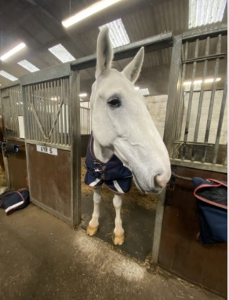
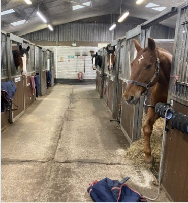
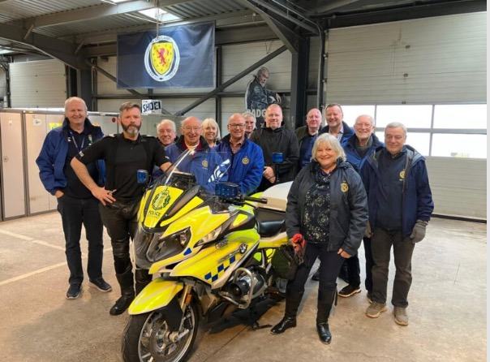

Police Scotland visit to Stewarton Equine Centre and Govan Traffic

Scotland's mounted police work out of Stewarton in East Ayrshire and provide policing for high-profile events across Scotland. Ayr Rotary Club were privileged to engage with the staff and their magnificent equine animals on a recent visit to their stables.
Mounted officers carry out public order patrols and are a presence at sporting events, demonstrations and processions as well as open ground searches for missing persons, where they can get into areas that vehicles would be unable to access.

The visit was filled with facts and figures about the patrol challenges and warmth and affection with which the horses are held by all the police riders. Skye, Troon, Arran, Culzean, Eyemouth, Nairn, Elgin, Lockerbie just some of the names of these huge wonderful beasts which were as inquisitive about their visitors as the Ayr Rotary members were about their hosts.
Constable Erin Padkin, Mounted Branch, was an excellent informative guide for the morning.

Traffic Division in Govan was our next stop where Sergeant Jon Mochan hosted our visit. A demonstration of a "stinger" used to deflate car tyres was only part of a very interesting and thought provoking tour of the motor cycle section of 'traffic'.
Huge BMW bikes were a delight to behold for those who had grown up with wee Triumphs, BSA and Enfields. Statistically, said Sgt Jon, the dangerous elements for riders to be involved with road traffic accidents is when it's a sunny weekend, the riders are between 35 and 58 and they're navigating a left hand bend.
Tragically, he said, traffic officers also have to visit families to deliver difficult news, to the loved ones of the deceased. "That knock on the door". Thankfully the psychological strain and impact of being the bearer of devastating news on the police is now recognised and treated with care and compassion by the force.
President Howard gave a worthy vote of thanks to Erin in Stewarton and Jon in Govan for an excellent day out.
Sgt Jon Mochan with his visitors
Share this: